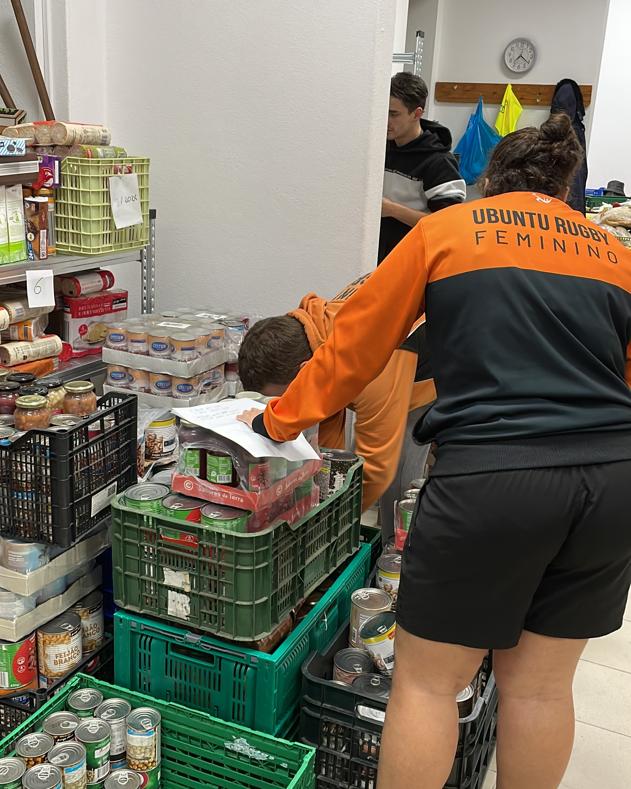
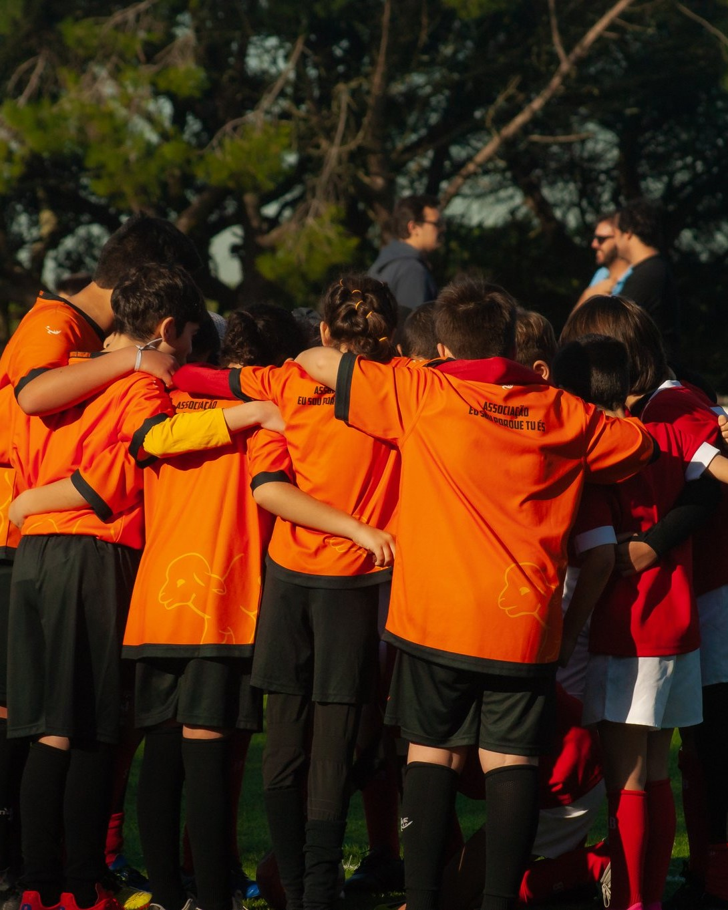

Estágio Regional Sul Feminino U15
24/03/2024
Em modo de preparação para o Portugal Rugby Youth Festival 2024, as nossas atletas sub-15 marcaram presença no estágio regional sul.
Em modo de preparação para o Portugal Rugby Youth Festival 2024, as nossas atletas sub-15 marcaram presença no estágio regional sul.
Caça aos Ovos
24/03/2024
A AUR organizou uma caça aos ovos para os atletas e familiares como atividade de Páscoa no Parque Urbano da Cavaleira.
A AUR organizou uma caça aos ovos para os atletas e familiares como atividade de Páscoa no Parque Urbano da Cavaleira.
Convívio Direito Sub-6/8/10/12
23/03/2024
Os nossos escalões de formação marcaram presença no 7° Torneio Internacional do Direito.
Os nossos escalões de formação marcaram presença no 7° Torneio Internacional do Direito.
Jogo Séniores M vs. Dark Horses
18/03/2024
Os nossos séniores masculinos honraram a camisola do Ubuntu Rugby num jogo amigável contra os Dark Horses Rugby.
Os nossos séniores masculinos honraram a camisola do Ubuntu Rugby num jogo amigável contra os Dark Horses Rugby.
Convívio de Apoio à Seleção Masculina

03/03/2024
Os nossos atletas marcaram presença no apoio às meias finais do Campeonato Europeu Masculino Portugal vs. Espanha. Os escalões sub8/10/12 participaram num torneio na Tapada da Ajuda.
Os nossos atletas marcaram presença no apoio às meias finais do Campeonato Europeu Masculino Portugal vs. Espanha. Os escalões sub8/10/12 participaram num torneio na Tapada da Ajuda.
Jogo Séniores M vs. Belas

02/03/2024
Os nossos séniores masculinos jogaram juntamente com os Dark Horses Rugby contra o Belas Rugby naquele que foi o último jogo do campeonato CN2.
Os nossos séniores masculinos jogaram juntamente com os Dark Horses Rugby contra o Belas Rugby naquele que foi o último jogo do campeonato CN2.
Centro Social Paroquial do Algueirão

01/03/2024
A AUR esteve presente no Centro Social Paroquial do Algueirão a ajudar na contagem de produtos alimentares.
A AUR esteve presente no Centro Social Paroquial do Algueirão a ajudar na contagem de produtos alimentares.
Convívio de Apoio à Seleção Feminina


24/02/2024
Os escalões sub8/10/12 participaram num convívio de apoio à Seleção Feminina e a equipa feminina da AUR participou numa jornada de Emergentes. Fez-se um piquenique com todos os presentes.
Os escalões sub8/10/12 participaram num convívio de apoio à Seleção Feminina e a equipa feminina da AUR participou numa jornada de Emergentes. Fez-se um piquenique com todos os presentes.
Jogo Séniores M vs. São Miguel

17/02/2024
Os nossos séniores masculinos jogaram juntamente com os Dark Horses Rugby contra o São Miguel Rugby.
Os nossos séniores masculinos jogaram juntamente com os Dark Horses Rugby contra o São Miguel Rugby.
Torneio 7's Emergentes Feminino

17/02/2024
As nossas séniores femininas participaram no torneio de sevens emergentes, que decorreu no Campo de Rugby do Direito.
As nossas séniores femininas participaram no torneio de sevens emergentes, que decorreu no Campo de Rugby do Direito.
Estágio da Seleção sub14

17/02/2024
Os nossos atletas, Rodrigo Branco e Luanna Monteiro, marcaram presença no estágio da seleção sub14.
Os nossos atletas, Rodrigo Branco e Luanna Monteiro, marcaram presença no estágio da seleção sub14.
Jogo Séniores F vs. Agrária

04/02/2024
As nossas séniores femininas estiveram em campo juntamente com o Sporting Rugby a disputar os quartos de final da Taça de Portugal.
As nossas séniores femininas estiveram em campo juntamente com o Sporting Rugby a disputar os quartos de final da Taça de Portugal.
Torneio Sub-14 na Bairrada

04/02/2024
Os nossos escalões de formação marcaram presença juntamente com o Benfica Rugby no torneio na Bairrada.
Os nossos escalões de formação marcaram presença juntamente com o Benfica Rugby no torneio na Bairrada.
Jogo Séniores M vs. Oeiras

03/02/2024
Os nossos séniores masculinos jogaram juntamente com os Dark Horses Rugby contra o Oeiras Rugby.
Os nossos séniores masculinos jogaram juntamente com os Dark Horses Rugby contra o Oeiras Rugby.
Semana de aulas - Escola Piloto

29/01/2024 - 02/02/2024
A Academia Ubuntu Rugby esteve a dar aulas de introdução ao Rugby na Escola Básica Piloto, em Mem-Martins, nos horários de Educação Física.
A Academia Ubuntu Rugby esteve a dar aulas de introdução ao Rugby na Escola Básica Piloto, em Mem-Martins, nos horários de Educação Física.
Final do Campeonato Feminino Nacional


28/01/2024
As nossas seniores femininas estiveram em campo juntamente com o Sporting Rugby a disputar a final do Campeonato Nacional de XV.
As nossas seniores femininas estiveram em campo juntamente com o Sporting Rugby a disputar a final do Campeonato Nacional de XV.
Jogo Séniores M vs. Sporting

28/01/2024
Os nossos seniores jogaram juntamente com os Dark Horses Rugby contra o Sporting Rugby.
Os nossos seniores jogaram juntamente com os Dark Horses Rugby contra o Sporting Rugby.
Convívio Rugby Belenenses Sub-8/10/12


27/01/2024
Os nossos escalões de formação marcaram presença juntamente com o Benfica Rugby no convívio organizado pelo Belenenses Rugby.
Os nossos escalões de formação marcaram presença juntamente com o Benfica Rugby no convívio organizado pelo Belenenses Rugby.